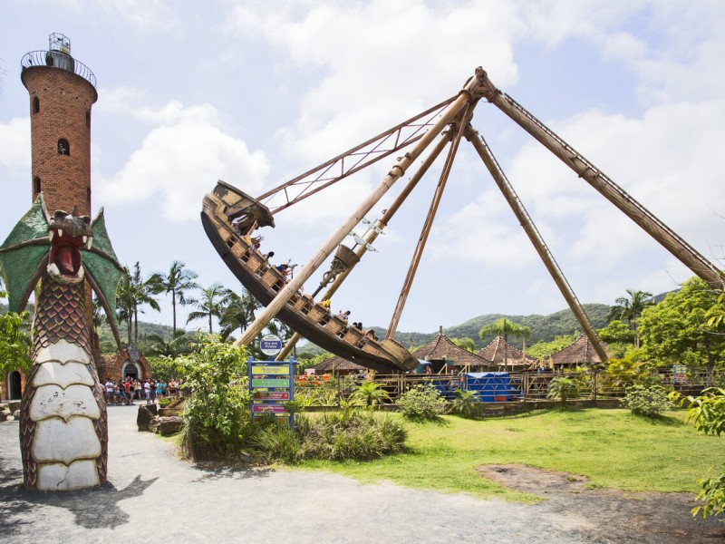
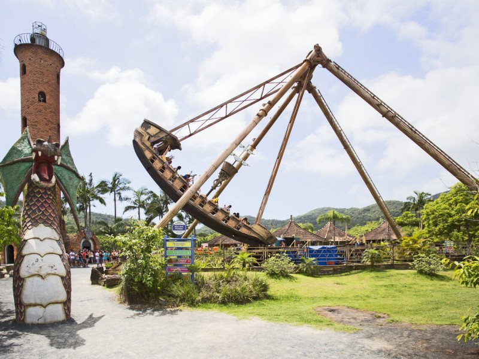

Sobre o Beto Carrero
Beto Carrero World é um parque temático localizado em Penha, Santa Catarina, Brasil. Inaugurado em 28 de dezembro de 1991, o parque foi idealizado por João Batista Sérgio Murad, mais conhecido como Beto Carrero. Inspirado nos grandes parques temáticos internacionais, Beto Carrero teve a visão de criar um lugar mágico no Brasil. Com o passar dos anos, o parque cresceu e se tornou o maior parque temático da América Latina, atraindo milhões de visitantes anualmente. Hoje, o parque é uma mistura de atrações modernas e shows ao vivo, mantendo sempre viva a memória e o espírito aventureiro de seu fundador.

 
